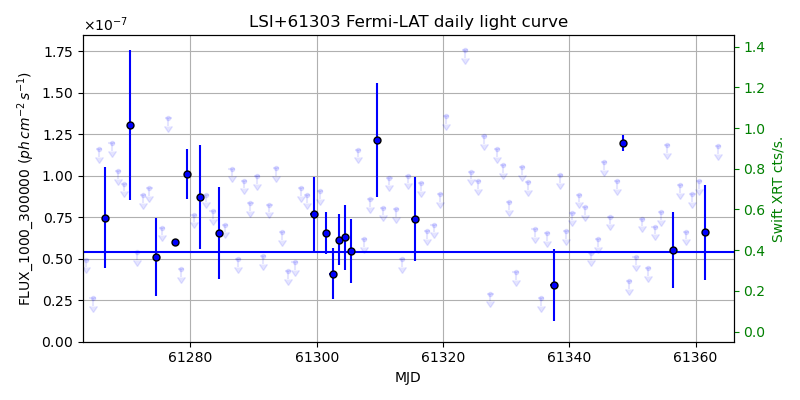

LAT Lightcurve site: https://fermi.gsfc.nasa.gov/ssc/data/access/lat/msl_lc/source/LSI_p61_303
Swift site: https://www.swift.psu.edu/monitoring/source.php?source=LSI+61303
NED: Query
Time of last update of this page: UT: 2026-11-20 16:13 (MJD: 61364.676)
| Property | Value |
|---|---|
| R.A. | 2:40:31.44 |
| Dec. | 61:13:44.4 |
| z | 0.000 |
| 3FGL SpectrumType | LogParabola |
| 3FGL PL Index | |
| 3FGL Flux_100_300000 | 8.90e-07 1 / (s cm2) |
| 3FGL Flux_1000_300000 | 5.39e-08 1 / (s cm2) |
| 3FGL Flux >200 GeV | 7.50e-12 1 / (s cm2) |
| 3FGL Extrap. Crab >200 GeV | 0.03 |
| 3FGL Flux After EBL Absorption >200GeV | 7.50e-12 1 / (s cm2) |
| 3FGL EBL Crab Fraction >200GeV | 0.03 |
| MJD | dMJD | Flux | dFlux | Frac3FGL | FracCrab>200GeV | EBLFracCrab>200GeV |
|---|---|---|---|---|---|---|
| 61359.50 | 0.50 | 9.95e-07 | 2.30e-07 | 1.12 | 0.04 | 0.04 |
| 61360.50 | 0.50 | 4.82e-07 | 1.79e-07 | 0.54 | 0.02 | 0.02 |
| 61361.50 | 0.50 | 9.54e-07 | 2.30e-07 | 1.07 | 0.03 | 0.03 |
| 61362.50 | 0.50 | 3.52e-06 | 0.00e+00 | 0.00 | 0.00 | 0.00 |
| 61363.50 | 0.50 | 2.11e-06 | 0.00e+00 | 0.00 | 0.00 | 0.00 |

| MJD | dMJD | Flux | dFlux | Frac3FGL | FracCrab>200GeV | EBLFracCrab>200GeV |
|---|---|---|---|---|---|---|
| 61328.50 | 3.50 | 6.22e-07 | 1.20e-07 | 0.70 | 0.02 | 0.02 |
| 61335.50 | 3.50 | 1.16e-06 | 9.18e-08 | 1.30 | 0.04 | 0.04 |
| 61342.50 | 3.50 | 7.46e-07 | 9.06e-08 | 0.84 | 0.03 | 0.03 |
| 61349.50 | 3.50 | 9.05e-07 | 8.83e-08 | 1.02 | 0.03 | 0.03 |
| 61356.50 | 3.50 | 7.27e-07 | 7.53e-08 | 0.82 | 0.03 | 0.03 |

| MJD | dMJD | Flux | dFlux | Frac3FGL | FracCrab>200GeV | EBLFracCrab>200GeV |
|---|---|---|---|---|---|---|
| 61359.50 | 0.50 | 8.88e-08 | 0.00e+00 | 0.00 | 0.00 | 0.00 |
| 61360.50 | 0.50 | 9.68e-08 | 0.00e+00 | 0.00 | 0.00 | 0.00 |
| 61361.50 | 0.50 | 6.59e-08 | 2.87e-08 | 1.22 | 0.04 | 0.04 |
| 61362.50 | 0.50 | 2.48e-07 | 0.00e+00 | 0.00 | 0.00 | 0.00 |
| 61363.50 | 0.50 | 1.18e-07 | 0.00e+00 | 0.00 | 0.00 | 0.00 |

| MJD | dMJD | Flux | dFlux | Frac3FGL | FracCrab>200GeV | EBLFracCrab>200GeV |
|---|---|---|---|---|---|---|
| 61328.50 | 3.50 | 4.03e-08 | 0.00e+00 | 0.00 | 0.00 | 0.00 |
| 61335.50 | 3.50 | 3.01e-08 | 7.26e-09 | 0.56 | 0.02 | 0.02 |
| 61342.50 | 3.50 | 2.97e-08 | 7.04e-09 | 0.55 | 0.02 | 0.02 |
| 61349.50 | 3.50 | 3.97e-08 | 8.30e-09 | 0.74 | 0.02 | 0.02 |
| 61356.50 | 3.50 | 4.62e-08 | 8.35e-09 | 0.86 | 0.03 | 0.03 |
--------------------------------------------------------- Using user-supplied coords: 2:40:31.44 61:13:44.4 2000 --------------------------------------------------------- FLWO UT night of: 2026-11-21 Local Sid. @ Midnight: 03:37 Sunset (-15.0) (local, UT): 18:33 01:33 Sunrise (-15.0) (local, UT): 05:47 12:47 Moonrise (local, UT): Moonset (local, UT): 03:40 10:40 Moon phase: 0.85 --------------------------------------------------------- AzTime LSID UT Obj_el Obj_az Mn_el Mn_az Sep. --------------------------------------------------------- 18:33 22:09 01:33 37.7 34.3 47.9 117.4 58.9 19:03 22:39 02:03 41.3 33.9 53.3 125.0 58.7 19:33 23:09 02:33 44.8 32.8 58.2 134.7 58.5 20:03 23:39 03:03 48.2 31.0 62.3 146.9 58.4 20:33 00:09 03:33 51.4 28.4 65.1 162.1 58.2 21:03 00:39 04:03 54.2 24.8 66.3 179.7 58.0 21:33 01:09 04:33 56.7 20.2 65.4 197.5 57.9 22:03 01:39 05:03 58.6 14.5 62.9 213.2 57.7 22:33 02:09 05:33 59.9 7.9 59.0 225.9 57.5 23:03 02:39 06:03 60.3 0.7 54.2 235.9 57.4 23:33 03:09 06:33 60.0 353.5 48.9 243.9 57.2 00:03 03:39 07:03 58.9 346.7 43.2 250.4 57.0 00:33 04:10 07:33 57.1 340.8 37.3 255.9 56.9 01:03 04:40 08:03 54.7 336.0 31.2 260.7 56.7 01:33 05:10 08:33 51.9 332.2 25.1 265.1 56.5 02:03 05:40 09:03 48.8 329.4 19.0 269.2 56.4 02:33 06:10 09:33 45.4 327.5 12.9 273.0 56.2 03:03 06:40 10:03 41.9 326.3 6.8 276.9 56.0 03:33 07:10 10:33 38.4 325.8 1.0 280.7 55.9 04:03 07:40 11:03 34.8 325.8 -4.9 284.7 55.7 04:33 08:10 11:33 31.2 326.3 -11.1 288.8 55.5 05:03 08:40 12:03 27.7 327.2 -16.8 293.2 55.3 05:33 09:10 12:33 24.3 328.5 -22.3 298.1 55.1 05:47 09:25 12:47 22.7 329.3 -24.8 300.5 55.0 --------------------------------------------------------- Dark hours >55 deg.: 0.00